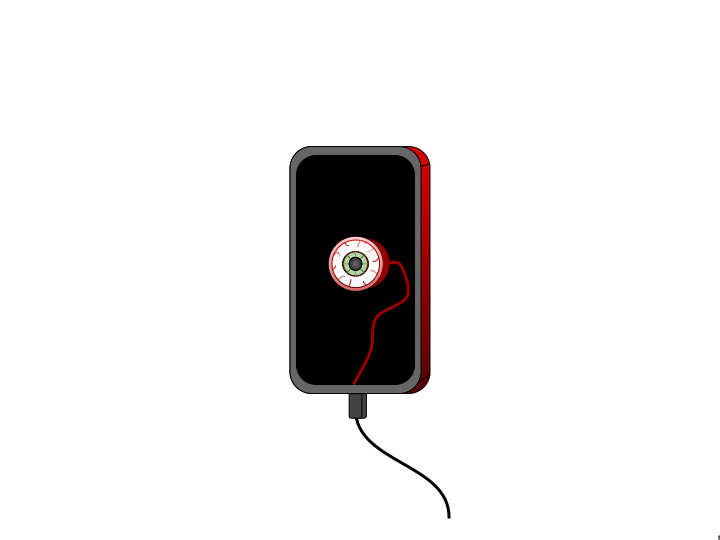
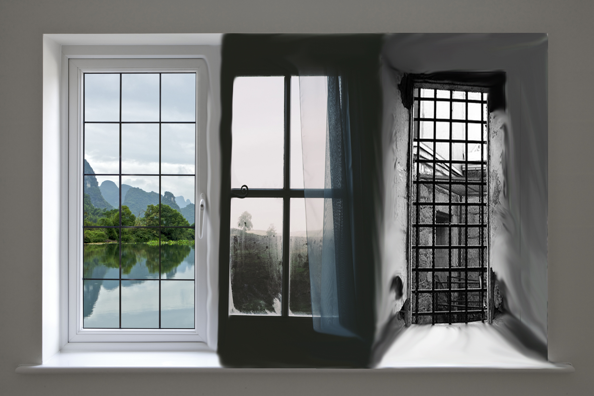
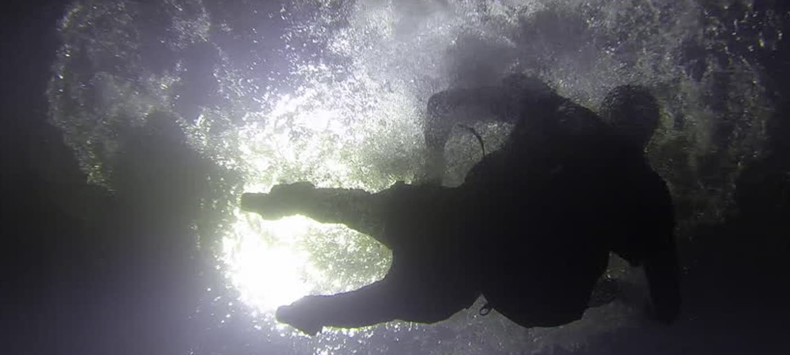

10 Links That Will Illuminate the Reader!!!
"From Prison Bars to Swimming Pools, These Links Put the Lit into LITerature"
Posted on April 8 2018
Ashit Pai FuzzBeed Staff
Our Excerpt from "The Love Letter of Alfred J Prufrock"
In the room the women come and go
Talking of Michelangelo.
The yellow fog that rubs its back upon the window-panes,
The yellow smoke that rubs its muzzle on the window-panes
Licked its tongue into the corners of the evening,
Lingered upon the pools that stand in drains,
Let fall upon its back the soot that falls from chimneys,
Slipped by the terrace, made a sudden leap,
And seeing that it was a soft October night,
Curled once about the house, and fell asleep.
1. In the Room The Women Come and Go Talking of Michelangelo:
Link to the Party Scence from the Graduate (Meaningless World and Lack of Community)
We chose to link this stanza to this particular scene in the graduate because it allows the reader to see how it creates the atmosphere of a meaningless world. Michelangelo is a renowned renaissance painting whose art is only talked about by the rich and wealthy so these women must be of high class. The idiom coming and going, a general bustle of activity( Wikipedia), suggests that these women are having a gathering in the room. The action of “Coming and going” also seems pointless as the two contradict each other. Together these lines create a sense of both a meaningless world and a lack community. To illuminate the reader of these modernist elements, I linked it to the scene from the graduate where benjamin’s wealthy family friends congratulate him and ask him about his future. This scene demonstrates the lack of community as he hardly knows or trusts any of these family friends. It also shows how the world is meaningless as Ben’s family friends obsessed over his past achievements as a track star and various awards as well a his future. All of this to Benjamin is meaningless.
2. Michelangelo:
Represents Sddiction to Sexual Realtions

There's nothing here yet
3. Yellow Fog / Yellow Smoke:
Represents Smoking and Addictions to drugs
The first stanza of the poem depicts a run-down city. Elliot describes its streets as half-deserted, the hotels as cheap, and the restaurants like sawdust. In our excerpt of the text, the yellow fog can refer to the heavy pollution from industrialization that haunts this city. This polluted and ruined city would be seen by modernists as a decline in civilization from the lack of individualism. This was made possible through industrialization, where the individual becomes a part of a larger machine (assembly lines). In Simon and Garfunkel’s sound of silence, they mention “the people bowed and prayed. To the neon god they made,” which also illustrates how technology alienates and isolates the individual. I decided to create an image which shows an eye on a phone screen. In the image, the eye is connected to the cell phone wires, meaning we are more connected to electronics than other humans. Lack of community is a prevalent characteristic of modernism that applies to modern technology (which encourages us to spend more time alone).
4. Window Panes:
Represents isolation from the rest of the world
Window-panes are mentioned two times emphasized in our excerpt. Both times the window panes act as a barrier to the yellow fog/smoke as it stops the fog/smoke in its path. This obstruction is show by how the fog/smoke “rubs its back” and “rubs its muzzle” on the window panes. It seems as though the yellow fog/smoke is being trapped by the window panes alluding to the modernist theme of isolation. I chose to create this image of window-panes that look like prison bars. This illuminates the reader by showing how window-panes represent isolation as separates one from the outside world and forces them to be confined in a small space like that of a prison. I used three different window panes and many waves and blurs to show the distortion of reality. This is similar to how Ned from the swimmer slowly sees the truth as he swims across the county. His journey starts off bright and positive but slowly becomes darker harsher until he reaches the end where he sees that he has nothing left. I tried to show that descent with the three different windows finally showing how the window-panes are the prison cell that isolates the world.
5. Muzzle/Licked its Tongue:
Animal imagery (stray dog relates to no sense of community/meaningless world)

There's nothing here yet
6. Pools that stand in drains:
Water represents the subconscious mind relates to Ben from the Graduate and Ned from the Swimmer.
Water floods the mind
Clear yet muddy, all the time
Water leaves my mind
There's nothing here yet
9. Corners of the evening:
Relates to the modern hero, finding his own light in a world of darkness
There's nothing here yet
10. Fell asleep:
A fall into the deep subconscious
Sleep is used in literature to represent the subconscious as two are often associated with each other. Here in this excerpt the action of falling asleep represents a descent into the deep subconscious as sleep is the most common way one enters their subconcious. I linked this to an image of a person falling in deep water. Water represents the realm of dreams, imagination and feelings that lie below the surface and is often used in modernist pieces like the Graduate and the Swimmer to represent the subconscious. In the Graduate, for example, we see Ben enter his subconscious when he goes diving in his pool. Right after this scene Ben has an affair with Mrs. Robinson showing that his subconscious mind is beginning to take over. From this link readers can see the subtext of the subconscious in this text and can expect a possible twist as the character’s subconscious begins to take over.
Copyright © 2018 Colin Lin